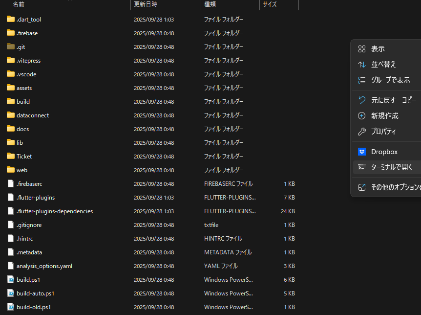

公開する
アプリの設定が完了したら、Webに公開します。
ヒント
1時間当たり10回かそれ未満の回数制限があるようなので、むやみやたらにやらないほうがいいです。
公開手順
- 今まで編集してきたフォルダの一番上の階層(
shikon-voteapp.github.io)で右クリックし、ターミナルで開くを選択します。 - ターミナルウィンドウが表示されるので、以下のコードを入力し、Enterを押して実行します。
./build.ps1
ターミナル画面
- 以下の出力がされるので、該当する数字を入力し、Enterを押して確定させます。あとは待つだけです。
=== Version Management Start ===
Current version: 1.6.1.19
Version update options:
1. Patch version (1.0.0 -> 1.0.1)
2. Minor version (1.0.0 -> 1.1.0)
3. Major version (1.0.0 -> 2.0.0)
4. Build number only (1.0.0.1 -> 1.0.0.2)
5. Skip version update
Select option (1-5):各オプションの意味
1. Patch version
軽微な不具合修正などに用います。画像や文章の差し替えを行ったときはこれを用います。
2. Minor version
大型ではない新機能実装などに用います。本アプリで用いる機会は少ないです。
3. Major version
大型アップデートなどに用います。本アプリで用いる機会はないはずです。
4. Build numver only と 5. Skip version update
使うことはありません。